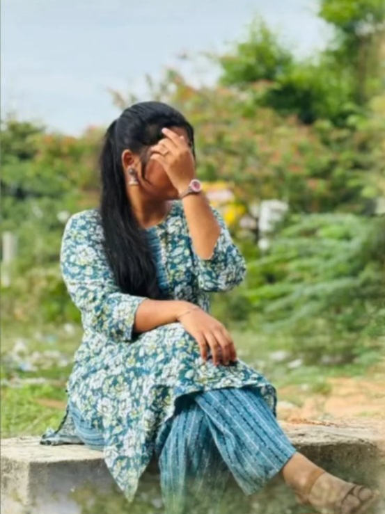
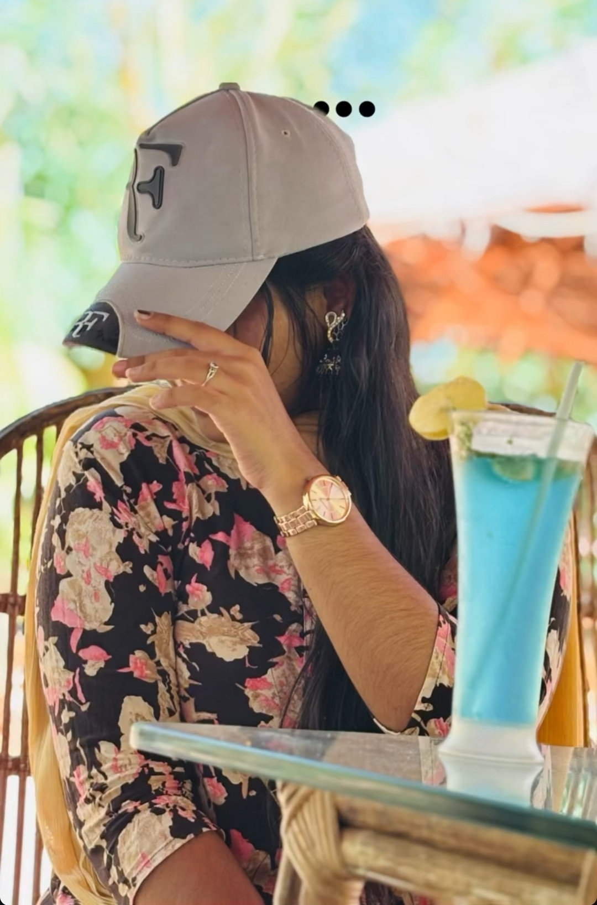

CHAPTER 04 / 10
THE MOMENTS THAT STAY
THE MOMENTS THAT STAY
Little Moments, Lasting Memories



Not every memory needs a caption.
Some moments are special simply because they happened.


Not every memory needs a caption.
Some moments are special simply because they happened.